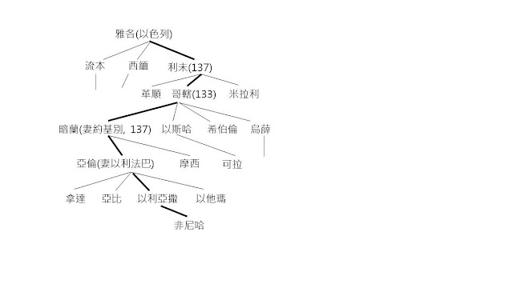

{kind=link}
|
耶和華說：「將以色列人按著他們的軍隊從埃及地領出來。」這是對那亞倫、摩西說的。(出6:26) |
「耶和華吩咐摩西、亞倫往以色列人和埃及王法老那�堨h，把以色列人從埃及地領出來」(6:13), 當摩西再一次以自己是「拙口笨舌的人」來推卻耶和華給他的任務, 他和哥哥亞倫還是去了見法老, 當讀者期待這第二次見法老會有什麼結果時, 作者忽然插入了一個家譜, 為甚麼？
A. 亞倫宗族的家譜。14-25
A1. 利未家譜的簡略,
14-19
A2. 亞倫家譜的簡略,
20-25
B. 以色列人出埃及,
26-27
「以色列人家長的名字記在下面…」(14), 這家譜列出了從雅各到非尼哈共7代的人，[1]雖說這是摩西和亞倫的家譜，但仔細看不難發現這是亞倫為主軸的家譜, 摩西的部份只能說是枝節, 這見於亞倫的後人直至腓尼哈被提及了而摩西的後人則沒有被提及。注意非尼哈是《摩西五經》讀者相當熟識的人物(參民25:1-17、書22:1-34。士20:28等)。 
這家譜有點反高潮，為甚麼在這緊張的關頭, 提及這一連串的名字？為甚麼雅各的十二個兒子, 只提到前三人, 若果說是利未家譜, 又為甚麼只列出哥轄的後人？然後哥轄後人也只列出暗蘭的兒子亞倫的後人, 我們有理由相信作者在這裡是「特意」(不是突然)插入這家譜, 說明亞倫的宗族, 但這要說明甚麼？
{kind=link}
「耶和華說：將以色列人按著他們的軍隊從埃及地領出來…」(26)[2], 除了插入了亞倫宗族的家譜以後, 《出》的作者還加入了26-27節的編者按語, 提及上帝吩咐摩西和亞倫去見法者時, 曾經有這樣的話, 原來摩西不單是把以色列百姓領出埃及, 而是「按著他們的軍隊從埃及地領出來」！原來, 神帶領百姓出埃及的行動不單是為了除去以色列人的重擔和困苦, 而是要建立他們成為軍隊！所謂「按著他們的軍隊」, 指的就是按著不同的家族, 讓每一個家族都成為軍隊。至此, 讀者應該明白, 前述的那個利未支派的簡略家譜, 正是說明以色列十二支派都要按著他們的宗族成為軍隊！
對我們來說，聖經中的家譜是沉悶的，有時甚至是多餘的，然而《出》這�埵C出的家譜原來說明, 神要用屬神的子民, 他們的宗族成為軍隊。原來神不單是拯救百姓脫離苦海, 而是讓屬神的子民成為大能的軍隊。有否想過, 原來神今天從人海中揀選我們, 不單只是給我們天堂的入場券, 而是要叫我們大能的子民, 成為軍隊, 去幫助有需要的人, 去拯救失喪的靈魂。
我怎可以承擔這偉大神聖的任務？我們一個人當然不可以, 我們會看見自己許多的限制, 像摩西提出種種問題一樣。不過, 利未的家譜提醒我們, 神要興起不同的人, 進入神家譜中, 因為有你, 因為有我, 更因為有神, 不可能的成為可能, 哈利路亞。
|
凡接待他的，就是信他名的人，他就賜他們權柄作神的兒女。(約1:12)
|